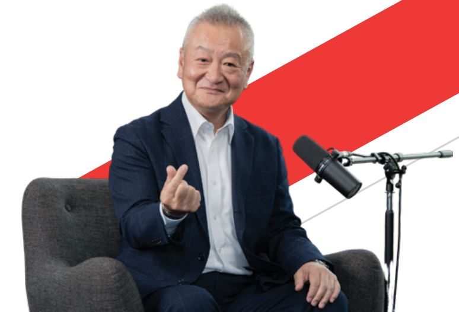
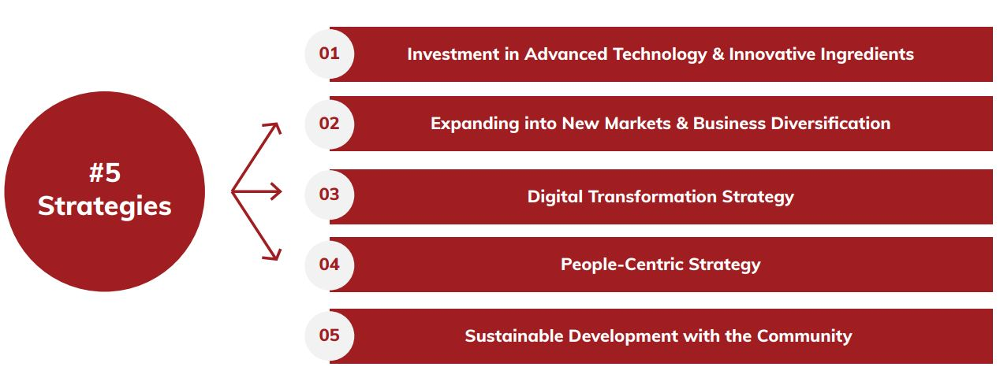
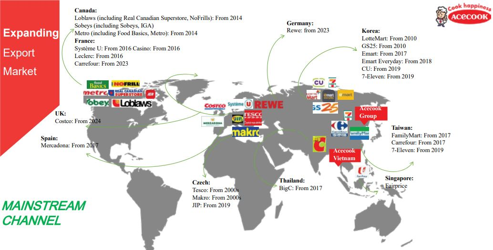
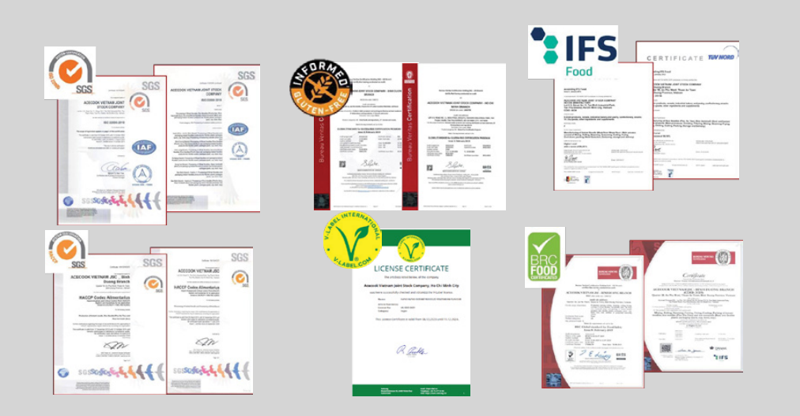
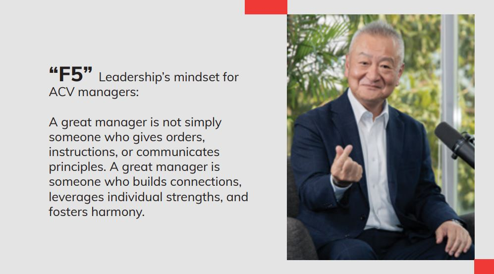
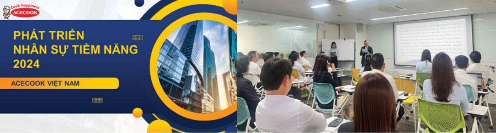
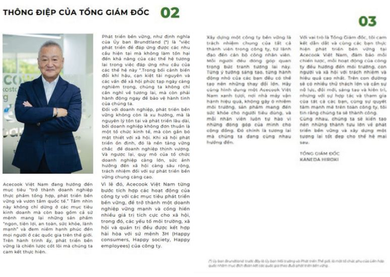
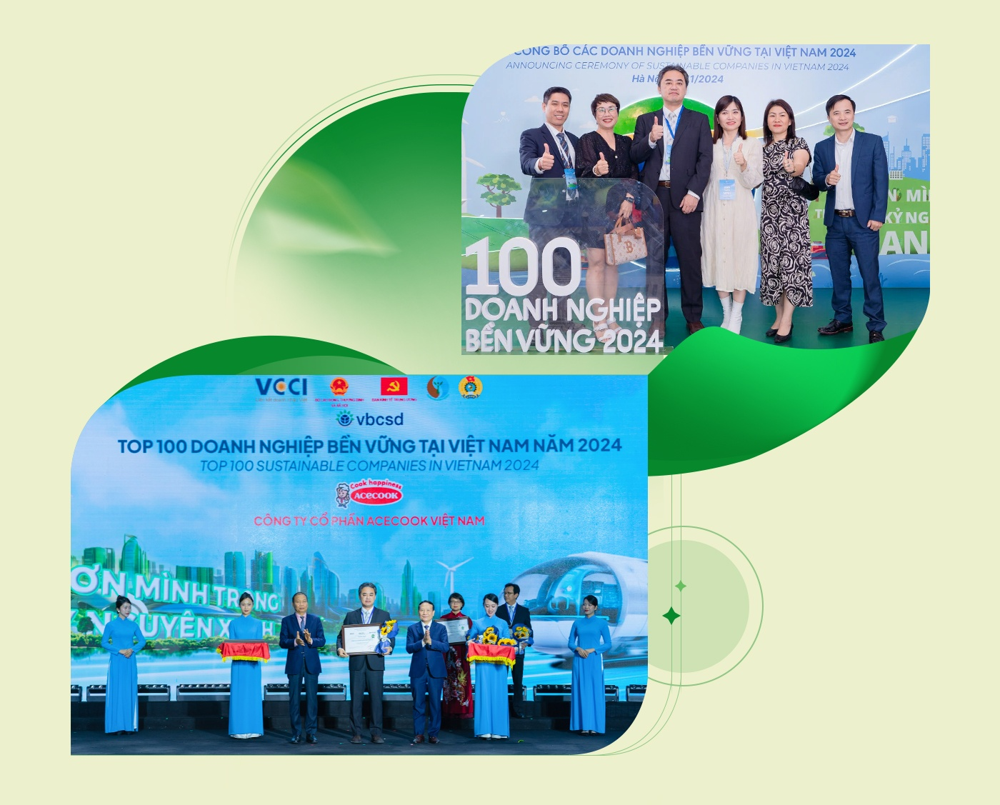

Mr Kaneda Hiroki- New Presidents of Acecook Vietnam from 2023
For over three decades, Acecook Vietnam has shaped the way millions experience convenience and flavor. In 2023, as the company reached a pivotal milestone, it welcomed back a seasoned leader – Mr. Kaneda Hiroki – as General Director. With more than 36 years of experience across both Acecook Japan and Vietnam, Mr. Kaneda returned not just with a plan but with a belief: happiness can be cooked and innovation is the recipe. His leadership has sparked a comprehensive transformation, steering the company into a new era through bold, people-centric, and future-ready strategies.

To meet the evolving needs of modern consumers and enhance product value, Acecook Vietnam – under Mr. Kaneda’s leadership, has pioneered key product innovations. These include noodles enriched with calcium, vitamin B1, and dietary fiber; product lines aligned with health-conscious trends such as non-fried, vegan, gluten-free, and rice-based noodles; and significant upgrades to manufacturing infrastructure, including new-generation factories in Vinh Long, Bac Ninh, and Binh Duong. This approach harmonizes tradition with innovation offering healthier, more diverse choices
while preserving the brand’s core identity.
Mr. Kaneda has championed not only geographic expansion but also business diversification. The company strengthened its international presence through innovative packaging and localized flavors, expanded beyond its core noodle products into complementary food categories, and invested in advanced R&D and flexible production lines that meet global standards like HALAL and SA8000. Evolving from a mono-product company into a multi-solution food business, Acecook Vietnam is paving the way for sustainable, global growth.


Develop a quality control system that meets international standards.

Understanding that innovation must happen behind the scenes as well, Mr. Kaneda accelerated digital
transformation across departments. Key initiatives include the integration of SAP ERP to streamline operations and enhance traceability, deployment of Power BI for real-time analytics, digital competency assessments for over 1,400 employees via AI-HR (boosting efficiency by 80%), and the introduction of KPI dashboards and e-contracts to simplify performance management.
Additionally, tools such as the Acecook Home App and internal chatbots have improved communication
for over 6,000 employees. This digital evolution has shifted Acecook’s operating model from
process-driven to insight-driven.


At the heart of Mr. Kaneda’s leadership is a philosophy rooted in connection, care, andcollaboration. Through the “We Share We Care” program, he conducted town halls across six branches to gather insights and align company direction. The F5 Manager Mindset workshops helped redefine leadership - from command-and-control to empower-and-inspire. Meanwhile, the HIPOs Program engaged 35 high-potential employees in project-based learning, coaching, and mentorship, cultivating the next generation of leaders.


HIPOs program


Sustainability at Acecook is not a department, it’s a mindset embedded in the company’s DNA. Under Mr. Kaneda’s leadership, the shift from coal to biomass and solar energy led to a 43% reduction in CO₂ emissions. The elimination of plastic spoons and optimization of packaging have enhanced recyclability and ensured compliance with EPR regulations. Sustainability KPIs are now integrated into leadership performance reviews, contributing to Acecook’s climb from rank #60 to #13 in Vietnam’s Corporate Sustainability Index (CSI) 2024. Across the supply chain, community engagement, and product lifecycle, Mr. Kaneda ensures growth that is not only successful but also responsible.

He is not just cooking products, he is cultivating culture. That’s the essence of visionary leadership. With clarity, courage, and compassion, Mr. Kaneda Hiroki has redefined what it means to lead. His belief that “cooking happiness through innovation” is more than a slogan, it’s a philosophy of action, aligning people, technology, and purpose. By merging bold innovation with cultural authenticity, Acecook Vietnam isn’t just evolving, it’s leading. And through that leadership, it’s delivering happiness – one bowl, one breakthrough, one future at a time.

The transformation of Acecook Vietnam during this period affirms the Group's strong commitment to its Go Global strategy. Leading a corporation is not merely a personal endeavor, but a collective effort by the Board of Directors and most importantly, the unified support of over 6,000 dedicated employees at Acecook Vietnam.

Top 100 Sustainable businesses 2023 - 2024 (VCCI)
In conclusion, Acecook Vietnam's success lies in their commitment to understanding and engaging their diverse workforce. By building an environment of trust, investing in employee development, and fostering a culture of caring, Acecook has emerged as an employer of choice in the highly competitive FMCG industry.

Tel: (028) 62682222 - EXT.122
(+84) 908 267 759
Email: clientsolution@anphabe.com
Follow us